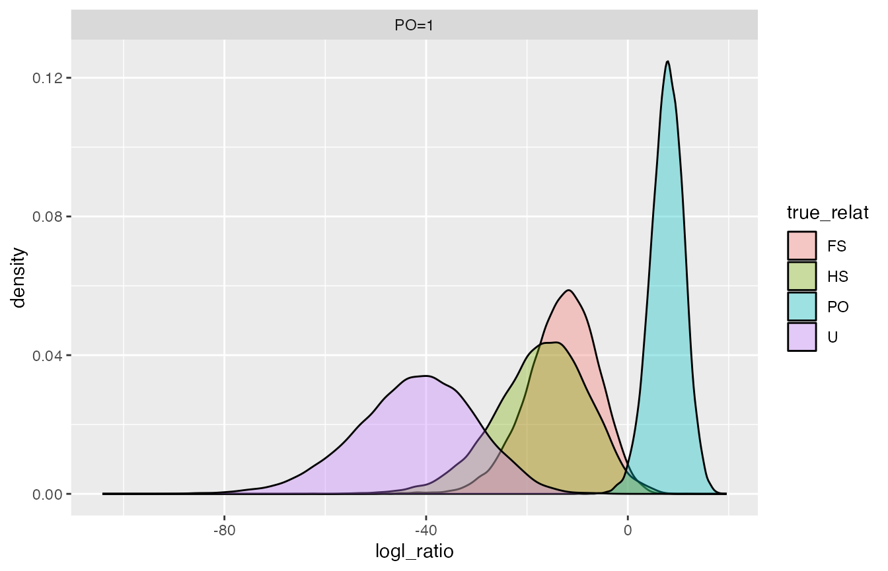
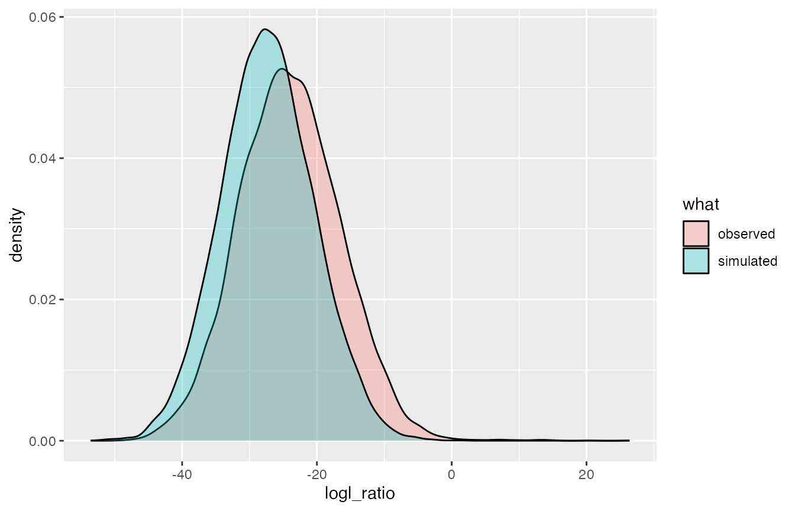
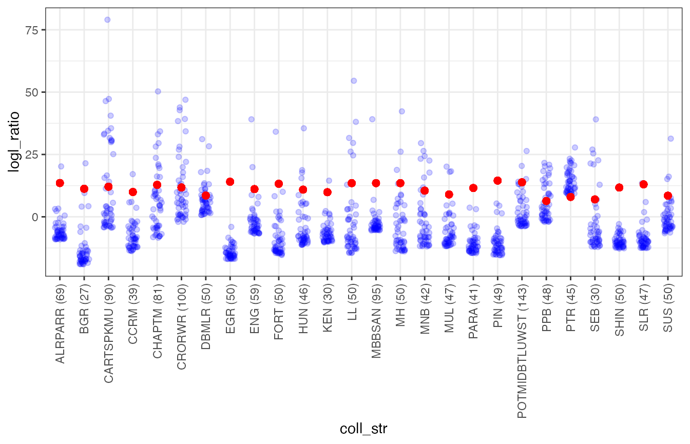

CKMRsim-example-2-microsatellites.RmdNow that y’all have, presumably, worked your way through the CKMRsim-example-1 vignette, we will run through another situation here (more quickly, and with considerably less discussion) in a study using next-generation-sequencing genotyped microsatellites on Atlantic salmon (Salmo salar).
Before we get going, let’s load some libraries:
We start with the data for all of the populations from Bradbury et al. (2018). These data come with the CKMRsim package in a wide-format tibble similar to the format used for the package rubias (minus a few columns).
labrador_salar_ngs_msats[1:5, 1:5]
#> # A tibble: 5 x 5
#> collection indiv `NGS-SsaD486` `NGS-SsaD486_1` `NGS-SSsp2210`
#> <chr> <chr> <chr> <chr> <chr>
#> 1 ALRPARR ALRPARR_ALRPARR_003702 076 080 032
#> 2 ALRPARR ALRPARR_ALRPARR_003705 080 080 052
#> 3 ALRPARR ALRPARR_ALRPARR_003706 <NA> <NA> <NA>
#> 4 ALRPARR ALRPARR_ALRPARR_003707 076 076 044
#> 5 ALRPARR ALRPARR_ALRPARR_003709 076 080 052We will develop a few analysis steps working on a single collection (POTMIDBTLUWST) from this data set. We will make a point of writing a function for each step, so that, when we are done, we might try repeating the whole affair for every collection in the data set, getting our tidyverse/purrr on for that job.
Here we grab just that one collection:
D <- labrador_salar_ngs_msats %>%
filter(collection == "POTMIDBTLUWST") %>%
select(-collection)First, make a long-format data frame like CKMR expects for genotypes:
make_long <- function(D) {
nc <- ncol(D)
loci <- names(D)[seq(3, nc, by = 2)]
names(D)[seq(3, nc, by = 2)] <- str_c(loci, "---", "2")
names(D)[seq(2, nc, by = 2)] <- str_c(loci, "---", "1")
D %>%
gather(key = "loccopy", value = "Allele", -indiv) %>%
separate(loccopy, into = c("Locus", "gene_copy"), sep = "---") %>%
rename(Indiv = indiv)
}
L <- make_long(D)And once we have that we need to summarise the allele frequencies. I really should have a CKMR function for this. Note that we will drop monomorphic loci here.
long2freqs <- function(L) {
L %>%
group_by(Locus, Allele) %>%
tally() %>%
filter(!is.na(Allele)) %>%
mutate(Freq = n / sum(n)) %>%
arrange(Locus, desc(Freq)) %>%
select(-n) %>%
group_by(Locus) %>%
filter(n() > 1) %>% # this removes monomorphic loci
mutate(AlleIdx = 1:n()) %>%
ungroup() %>%
mutate(LocIdx = as.integer(factor(Locus, levels = unique(Locus))),
Chrom = "Unk", # Ian probably knows where these are, but I don't have that info at the moment.
Pos = LocIdx
) %>%
select(Chrom, Pos, Locus, Allele, Freq, LocIdx, AlleIdx) %>%
reindex_markers() # this is a CKMRsim function
}
Fr <- long2freqs(L)Any loci that were monomorphic must also be dropped from the original genotype data set. So, we will include all of the above (and tossing monomorphic loci) in a function that returns two tibbles: 1) the long format genos for use (later) in CKMRsim, and 2) the allele freqs for use in CKMRsim.
prep_genos4CKMRsim <- function(D) {
L <- make_long(D)
Fr <- long2freqs(L)
Lp <- semi_join(L, Fr, by = "Locus")
list(Genos = Lp, Freqs = Fr)
}
# and now we do that all from the beginning again.
# GaF = Genos and Freqs
GaF <- labrador_salar_ngs_msats %>%
filter(collection == "POTMIDBTLUWST") %>%
select(-collection) %>%
prep_genos4CKMRsim(.)We will assume the microsatellite genotyping error model with a per-gene-copy miscall rate of 0.003 and a per-gene-copy average-length-allele dropout rate of 0.004, with the standard z-scale inflation factor. We will assume true and assumed genotyping error models are the same, for now…
We will do this all in terms of functions that will be easy to apply to all the collections later…
ngs_msat_create_ckmr <- function(Fr) {
create_ckmr(D = Fr,
kappa_matrix = kappas[c("PO", "FS", "HS", "U"), ],
ge_mod_assumed = ge_model_microsat1,
ge_mod_true = ge_model_microsat1,
ge_mod_assumed_pars_list = list(miscall_rate = 0.003, dropout_rate = 0.004),
ge_mod_true_pars_list = list(miscall_rate = 0.003, dropout_rate = 0.004)
)
}
# and use it:
CK <- ngs_msat_create_ckmr(GaF$Freqs)Then, let’s simulate 20,000 replicates. In production, you will probably want to do more. We will assume no missing data at this point, but that can be changed in a future run.d
simQs <- function(CK) {
simulate_Qij(C = CK, reps = 2e04,
sim_relats = c("PO", "FS", "HS", "U"),
calc_relats = c("PO", "FS", "U"))
}
Qs <- simQs(CK)
#> Simulating unlinked markers from Y_l_true matrices for relationship: PO
#> Simulating unlinked markers from Y_l_true matrices for relationship: FS
#> Simulating unlinked markers from Y_l_true matrices for relationship: HS
#> Simulating unlinked markers from Y_l_true matrices for relationship: UNow, let’s extract some logls (for PO and FS) so that we can plot them
logls <- bind_rows(
extract_logls(Qs, numer = c(PO = 1), denom = c(U = 1)),
extract_logls(Qs, numer = c(FS = 1), denom = c(U = 1)),
extract_logls(Qs, numer = c(PO = 1), denom = c(FS = 1))
)Now, we can plot those and get a picture of how we are doing with these killer microsats.
This plots the PO/U and FS/U log likelihood ratios.
logls %>%
filter(denom_wts == "U=1") %>%
ggplot(., aes(x = logl_ratio, fill = true_relat)) +
geom_density(alpha = 0.35) +
facet_wrap(~ numer_wts, ncol = 1) So, we see a lot of overlap between FS and PO, which we expect. Not much other overlap, so I suspect that FS and PO will easily be distinguished from unrelated.
How much overlap between FS and PO when we use the PO/FS statistic?
logls %>%
filter(denom_wts == "FS=1", numer_wts == "PO=1") %>%
ggplot(., aes(x = logl_ratio, fill = true_relat)) +
geom_density(alpha = 0.35) +
facet_wrap(~ numer_wts, ncol = 1) 
Let’s now do importance sampling to see what the FPRs and FNRs are. We will get FPRs at a lot of FNRs spaced close together so that we can get the FNR that is closest to a “good” FPR (of about 1/100 the reciprocal of the number of comparisons). Let’s say for now that we are going to be shooting for 10e-10 (should be plenty low…).
mc_samp <- function(Q) {
mc_sample_simple(
Q,
nu = c("PO", "FS"),
FNRs = c(seq(0.001, 0.20, by = 0.001))
)
}
FPRs <- mc_samp(Qs)OK, now, we will want to choose the lowest FNR with an FPR < 1e10 for both FS and PO, and return that in a tibble.
get_low_FPR <- function(R, cutoff = 1e-10) {
R %>%
group_by(numerator) %>%
filter(FPR < cutoff) %>%
slice(1)
}
low_FPR <- get_low_FPR(FPRs)
low_FPR
#> # A tibble: 2 x 10
#> # Groups: numerator [2]
#> FNR FPR se num_nonzero_wts Lambda_star pstar mc_method numerator
#> <dbl> <dbl> <dbl> <int> <dbl> <chr> <chr> <chr>
#> 1 0.061 9.56e-11 3.51e-12 18780 18.9 FS IS FS
#> 2 0.003 8.72e-11 8.29e-12 19940 17.1 PO IS PO
#> # … with 2 more variables: denominator <chr>, true_relat <chr>That is really encouraging.
Now, we can look for PO pairs and for FS pairs in the data set.
First, look for individuals that might be the same:
matchers <- find_close_matching_genotypes(
LG = GaF$Genos,
CK = CK,
max_mismatch = 10)There is no one even close to matching…not even with 10 loci mismatching
Make a function to look for FS pairs (I think these guys were all sampled as juvies) and for each individual in the second data frame, just keep the top 10 hits.
FS_candidates <- pairwise_kin_logl_ratios(
D1 = GaF$Genos,
D2 = GaF$Genos,
CK = CK,
numer = "FS",
denom = "U",
keep_top = 10,
num_cores = 1 # only on here for CRAN CHECK. Remove for personal use
) %>%
arrange(desc(logl_ratio))
#> D1 and D2 are identical: dropping self comparisons and keeping only first instance of each pair
FS_candidates
#> # A tibble: 615 x 4
#> D2_indiv D1_indiv logl_ratio num_loc
#> <chr> <chr> <dbl> <int>
#> 1 POTMIDBTLUWST_POTMIDBTLUWST_… POTMIDBTLUWST_POTMIDBTLUWST… 26.4 92
#> 2 POTMIDBTLUWST_POTMIDBTLUWST_… POTMIDBTLUWST_POTMIDBTLUWST… 20.4 94
#> 3 POTMIDBTLUWST_POTMIDBTLUWST_… POTMIDBTLUWST_POTMIDBTLUWST… 15.2 94
#> 4 POTMIDBTLUWST_POTMIDBTLUWST_… POTMIDBTLUWST_POTMIDBTLUWST… 14.1 91
#> 5 POTMIDBTLUWST_POTMIDBTLUWST_… POTMIDBTLUWST_POTMIDBTLUWST… 13.1 75
#> 6 POTMIDBTLUWST_POTMIDBTLUWST_… POTMIDBTLUWST_POTMIDBTLUWST… 13.1 64
#> 7 POTMIDBTLUWST_POTMIDBTLUWST_… POTMIDBTLUWST_POTMIDBTLUWST… 12.1 91
#> 8 POTMIDBTLUWST_POTMIDBTLUWST_… POTMIDBTLUWST_POTMIDBTLUWST… 10.1 83
#> 9 POTMIDBTLUWST_POTMIDBTLUWST_… POTMIDBTLUWST_POTMIDBTLUWST… 9.80 58
#> 10 POTMIDBTLUWST_POTMIDBTLUWST_… POTMIDBTLUWST_POTMIDBTLUWST… 8.05 89
#> # … with 605 more rowsOK, that is pretty cool.
As Mark said, it is wortwhile to compare the distribution of logl_ratios for (unrelated) individuals to the simulated values to make sure there is nothing super weird going on. Let’s do that.
all_FS_comparisons <- pairwise_kin_logl_ratios(
D1 = GaF$Genos,
D2 = GaF$Genos,
CK = CK,
numer = "FS",
denom = "U",
num_cores = 1)
#> D1 and D2 are identical: dropping self comparisons and keeping only first instance of each pairAnd plot.
DD <- logls %>% filter(true_relat == "U", numer_wts == "FS=1") %>%
select(logl_ratio) %>%
mutate(what = "simulated")
to_plot <- all_FS_comparisons %>%
select(logl_ratio) %>%
mutate(what = "observed") %>%
bind_rows(., DD)
ggplot(to_plot, aes(x = logl_ratio, fill = what)) +
geom_density(alpha = 0.3)
Aha! That is likely due to the population structure (this was a mixture of collections from several different places.)
first_steps <- labrador_salar_ngs_msats %>%
group_by(collection) %>%
nest() %>% # make data for each collection a tibble in a list column
mutate(GaF = map(.x = data, .f = prep_genos4CKMRsim), # prep geons and alle freqs
CK = map(GaF, function(x) ngs_msat_create_ckmr(x$Freqs)), # make ckmr objects
Qs = map(CK, simQs)
)
#> Simulating unlinked markers from Y_l_true matrices for relationship: PO
#> Simulating unlinked markers from Y_l_true matrices for relationship: FS
#> Simulating unlinked markers from Y_l_true matrices for relationship: HS
#> Simulating unlinked markers from Y_l_true matrices for relationship: U
#> Simulating unlinked markers from Y_l_true matrices for relationship: PO
#> Simulating unlinked markers from Y_l_true matrices for relationship: FS
#> Simulating unlinked markers from Y_l_true matrices for relationship: HS
#> Simulating unlinked markers from Y_l_true matrices for relationship: U
#> Simulating unlinked markers from Y_l_true matrices for relationship: PO
#> Simulating unlinked markers from Y_l_true matrices for relationship: FS
#> Simulating unlinked markers from Y_l_true matrices for relationship: HS
#> Simulating unlinked markers from Y_l_true matrices for relationship: U
#> Simulating unlinked markers from Y_l_true matrices for relationship: PO
#> Simulating unlinked markers from Y_l_true matrices for relationship: FS
#> Simulating unlinked markers from Y_l_true matrices for relationship: HS
#> Simulating unlinked markers from Y_l_true matrices for relationship: U
#> Simulating unlinked markers from Y_l_true matrices for relationship: PO
#> Simulating unlinked markers from Y_l_true matrices for relationship: FS
#> Simulating unlinked markers from Y_l_true matrices for relationship: HS
#> Simulating unlinked markers from Y_l_true matrices for relationship: U
#> Simulating unlinked markers from Y_l_true matrices for relationship: PO
#> Simulating unlinked markers from Y_l_true matrices for relationship: FS
#> Simulating unlinked markers from Y_l_true matrices for relationship: HS
#> Simulating unlinked markers from Y_l_true matrices for relationship: U
#> Simulating unlinked markers from Y_l_true matrices for relationship: PO
#> Simulating unlinked markers from Y_l_true matrices for relationship: FS
#> Simulating unlinked markers from Y_l_true matrices for relationship: HS
#> Simulating unlinked markers from Y_l_true matrices for relationship: U
#> Simulating unlinked markers from Y_l_true matrices for relationship: PO
#> Simulating unlinked markers from Y_l_true matrices for relationship: FS
#> Simulating unlinked markers from Y_l_true matrices for relationship: HS
#> Simulating unlinked markers from Y_l_true matrices for relationship: U
#> Simulating unlinked markers from Y_l_true matrices for relationship: PO
#> Simulating unlinked markers from Y_l_true matrices for relationship: FS
#> Simulating unlinked markers from Y_l_true matrices for relationship: HS
#> Simulating unlinked markers from Y_l_true matrices for relationship: U
#> Simulating unlinked markers from Y_l_true matrices for relationship: PO
#> Simulating unlinked markers from Y_l_true matrices for relationship: FS
#> Simulating unlinked markers from Y_l_true matrices for relationship: HS
#> Simulating unlinked markers from Y_l_true matrices for relationship: U
#> Simulating unlinked markers from Y_l_true matrices for relationship: PO
#> Simulating unlinked markers from Y_l_true matrices for relationship: FS
#> Simulating unlinked markers from Y_l_true matrices for relationship: HS
#> Simulating unlinked markers from Y_l_true matrices for relationship: U
#> Simulating unlinked markers from Y_l_true matrices for relationship: PO
#> Simulating unlinked markers from Y_l_true matrices for relationship: FS
#> Simulating unlinked markers from Y_l_true matrices for relationship: HS
#> Simulating unlinked markers from Y_l_true matrices for relationship: U
#> Simulating unlinked markers from Y_l_true matrices for relationship: PO
#> Simulating unlinked markers from Y_l_true matrices for relationship: FS
#> Simulating unlinked markers from Y_l_true matrices for relationship: HS
#> Simulating unlinked markers from Y_l_true matrices for relationship: U
#> Simulating unlinked markers from Y_l_true matrices for relationship: PO
#> Simulating unlinked markers from Y_l_true matrices for relationship: FS
#> Simulating unlinked markers from Y_l_true matrices for relationship: HS
#> Simulating unlinked markers from Y_l_true matrices for relationship: U
#> Simulating unlinked markers from Y_l_true matrices for relationship: PO
#> Simulating unlinked markers from Y_l_true matrices for relationship: FS
#> Simulating unlinked markers from Y_l_true matrices for relationship: HS
#> Simulating unlinked markers from Y_l_true matrices for relationship: U
#> Simulating unlinked markers from Y_l_true matrices for relationship: PO
#> Simulating unlinked markers from Y_l_true matrices for relationship: FS
#> Simulating unlinked markers from Y_l_true matrices for relationship: HS
#> Simulating unlinked markers from Y_l_true matrices for relationship: U
#> Simulating unlinked markers from Y_l_true matrices for relationship: PO
#> Simulating unlinked markers from Y_l_true matrices for relationship: FS
#> Simulating unlinked markers from Y_l_true matrices for relationship: HS
#> Simulating unlinked markers from Y_l_true matrices for relationship: U
#> Simulating unlinked markers from Y_l_true matrices for relationship: PO
#> Simulating unlinked markers from Y_l_true matrices for relationship: FS
#> Simulating unlinked markers from Y_l_true matrices for relationship: HS
#> Simulating unlinked markers from Y_l_true matrices for relationship: U
#> Simulating unlinked markers from Y_l_true matrices for relationship: PO
#> Simulating unlinked markers from Y_l_true matrices for relationship: FS
#> Simulating unlinked markers from Y_l_true matrices for relationship: HS
#> Simulating unlinked markers from Y_l_true matrices for relationship: U
#> Simulating unlinked markers from Y_l_true matrices for relationship: PO
#> Simulating unlinked markers from Y_l_true matrices for relationship: FS
#> Simulating unlinked markers from Y_l_true matrices for relationship: HS
#> Simulating unlinked markers from Y_l_true matrices for relationship: U
#> Simulating unlinked markers from Y_l_true matrices for relationship: PO
#> Simulating unlinked markers from Y_l_true matrices for relationship: FS
#> Simulating unlinked markers from Y_l_true matrices for relationship: HS
#> Simulating unlinked markers from Y_l_true matrices for relationship: U
#> Simulating unlinked markers from Y_l_true matrices for relationship: PO
#> Simulating unlinked markers from Y_l_true matrices for relationship: FS
#> Simulating unlinked markers from Y_l_true matrices for relationship: HS
#> Simulating unlinked markers from Y_l_true matrices for relationship: U
#> Simulating unlinked markers from Y_l_true matrices for relationship: PO
#> Simulating unlinked markers from Y_l_true matrices for relationship: FS
#> Simulating unlinked markers from Y_l_true matrices for relationship: HS
#> Simulating unlinked markers from Y_l_true matrices for relationship: U
#> Simulating unlinked markers from Y_l_true matrices for relationship: PO
#> Simulating unlinked markers from Y_l_true matrices for relationship: FS
#> Simulating unlinked markers from Y_l_true matrices for relationship: HS
#> Simulating unlinked markers from Y_l_true matrices for relationship: U
#> Simulating unlinked markers from Y_l_true matrices for relationship: PO
#> Simulating unlinked markers from Y_l_true matrices for relationship: FS
#> Simulating unlinked markers from Y_l_true matrices for relationship: HS
#> Simulating unlinked markers from Y_l_true matrices for relationship: U
#> Simulating unlinked markers from Y_l_true matrices for relationship: PO
#> Simulating unlinked markers from Y_l_true matrices for relationship: FS
#> Simulating unlinked markers from Y_l_true matrices for relationship: HS
#> Simulating unlinked markers from Y_l_true matrices for relationship: UNow, we can sample those and get some FPRs, etc.
next_step <- first_steps %>%
mutate(FPRs = map(Qs, mc_samp),
lowFPR = map(FPRs, get_low_FPR))From that we see that a few of the populations don’t have power for relationship inference as high as with the initial (large collection) group that we worked on.
Let’s still see what we find for the 50 highest FS/U logl fish in each group.
final <- next_step %>%
mutate(matchers = pmap(.l= list(x = GaF, y = CK, z = 10),
.f = function(x, y, z) find_close_matching_genotypes(LG = x$Genos, CK = y, max_mismatch = z)),
FS_candidates = pmap(.l = list(x = GaF, y = CK),
.f = function(x, y) pairwise_kin_logl_ratios(D1 = x$Genos, D2 = x$Genos, CK = y, numer = "FS", denom = "U", keep_top = 20, num_cores = 1) %>% arrange(desc(logl_ratio)) %>% slice(1:50))
)
#> D1 and D2 are identical: dropping self comparisons and keeping only first instance of each pair
#> D1 and D2 are identical: dropping self comparisons and keeping only first instance of each pair
#> D1 and D2 are identical: dropping self comparisons and keeping only first instance of each pair
#> D1 and D2 are identical: dropping self comparisons and keeping only first instance of each pair
#> D1 and D2 are identical: dropping self comparisons and keeping only first instance of each pair
#> D1 and D2 are identical: dropping self comparisons and keeping only first instance of each pair
#> D1 and D2 are identical: dropping self comparisons and keeping only first instance of each pair
#> D1 and D2 are identical: dropping self comparisons and keeping only first instance of each pair
#> D1 and D2 are identical: dropping self comparisons and keeping only first instance of each pair
#> D1 and D2 are identical: dropping self comparisons and keeping only first instance of each pair
#> D1 and D2 are identical: dropping self comparisons and keeping only first instance of each pair
#> D1 and D2 are identical: dropping self comparisons and keeping only first instance of each pair
#> D1 and D2 are identical: dropping self comparisons and keeping only first instance of each pair
#> D1 and D2 are identical: dropping self comparisons and keeping only first instance of each pair
#> D1 and D2 are identical: dropping self comparisons and keeping only first instance of each pair
#> D1 and D2 are identical: dropping self comparisons and keeping only first instance of each pair
#> D1 and D2 are identical: dropping self comparisons and keeping only first instance of each pair
#> D1 and D2 are identical: dropping self comparisons and keeping only first instance of each pair
#> D1 and D2 are identical: dropping self comparisons and keeping only first instance of each pair
#> D1 and D2 are identical: dropping self comparisons and keeping only first instance of each pair
#> D1 and D2 are identical: dropping self comparisons and keeping only first instance of each pair
#> D1 and D2 are identical: dropping self comparisons and keeping only first instance of each pair
#> D1 and D2 are identical: dropping self comparisons and keeping only first instance of each pair
#> D1 and D2 are identical: dropping self comparisons and keeping only first instance of each pair
#> D1 and D2 are identical: dropping self comparisons and keeping only first instance of each pair
#> D1 and D2 are identical: dropping self comparisons and keeping only first instance of each pairAnd now at the very end it would be interesting to plot the highest 50 from each collection. Sounds like a job for unnest.
While we are at it. Let’s figure out what the Logl_ratio value would be that gives us 1/100 * the reciprocal of the number of comparisons.
# first, let's get that lambda_c
DD4 <- final %>%
mutate(sample_size = map_int(.x = data, .f = nrow),
coll_str = str_c(collection, " (", sample_size, ")"),
num_pairs = sample_size * (sample_size - 1) / 2,
lambda_crit = map2_dbl(.x = FPRs, .y = num_pairs,
.f = function(x, y)
x %>% filter(FPR < 0.01 / y ) %>% slice(1) %>% pull(Lambda_star))
) %>%
select(coll_str, lambda_crit, FS_candidates) %>%
unnest(FS_candidates)
#> Adding missing grouping variables: `collection`
# now we can plot that nicely
ggplot(DD4, aes(x = coll_str, y = logl_ratio)) +
geom_jitter(colour = "blue", alpha = 0.2, width = 0.2) +
geom_point(aes(y = lambda_crit), size = 2, color = "red") +
theme_bw() +
theme(axis.text.x = element_text(angle = 90, hjust = 1.0, vjust = 0.5))
Bradbury, Ian R., Brendan F. Wringe, Beth Watson, Ian Paterson, John Horne, Robert Beiko, Sarah J. Lehnert, et al. 2018. “Genotyping-by-Sequencing of Genome-Wide Microsatellite Loci Reveals Fine-Scale Harvest Composition in a Coastal Atlantic Salmon Fishery.” Evolutionary Applications 11 (6): 918–30. https://doi.org/10.1111/eva.12606.